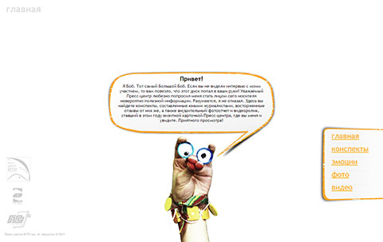
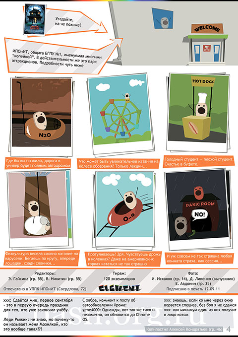
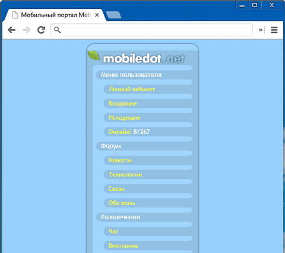
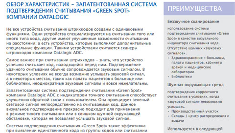

обо мне

Всем привет
Меня зовут Виталий (от лат. Vitalis — «жизненный»), мне 23. У меня невообразимо богатый внутренний мир, как и у 7 360 765 432 центров мира на этой планете.
У меня есть...
...два педальных колеса, которые я буду долго гнать. У меня есть кухня, которая может позволить мне не только ощутить вкус любого из блюд, созданных человечеством, но и познать счастье их приготовления. У меня есть окно с выходом в Глобальную сеть, открывающее безграничные возможности. У меня есть ахатины, которые заставляют не забывать об ответственности.
Я восхищаюсь...
...многим из того, что создано Природой и людьми — от самой Жизни до компьютерных игр, от дара мышления до шедевров искусства, являющих собой вершину творческой мысли. Я обожаю музыку, кино, книги, игры, еду и многие другие воплощения человеческой культуры. В чем еще смысл существования человечества, если не в стремлении Творить? Вот и я не желаю оставаться в стороне.
работы
- Сайт компании по производству SIP-панелей Изучить Для этого сайта мной был сделан дизайн, включающий логотип и общий для всех страниц макет. Далее макет был эластично сверстан и оживлен с помощью Joomla. Сайт поддерживает современные браузеры и популярные разрешения, а также корректно отображается на мобильных устройствах.
- Сайт Пресс-центра БГПУ им. М. Акмуллы Изучить Это уже вторая версия сайта, и она также была создана во времена моего активного участия в жизни Пресс-центра. Первая была статичной и ее можно считать бетой, новая же после создания дизайна и верстки была благополучно посажена на Wordpress и даже частично наполнена контентом.
- Главная страница для сайта «Открытая страна» Изучить Эластичная верстка главной страницы. В процессе не приходилось решать особенно сложные задачи, хотя работал я над ней достаточно давно, чтобы приходилось поддерживать устаревшие браузеры.
- Тестовое задание по верстке без JS Изучить Задание предусматривало ряд требований, основными среди которых было создание фиксированного всплывающего и анимированного меню без использования JS, учитывая адаптацию под мобильные устройства. Макет и текст не были предоставлены, так что творческий простор ничего не ограничивало, хотя дизайн сделан примитивным.
- Лэндинг «Уфа — Завьялиха» Изучить Верстка была выполнена, форма обратной связи добавлена и сделана работоспособной, как и счетчик времени до выезда. Заказчик был доволен.
- Небольшой сайт услуг по заправке принтеров Изучить Я работал над ним почти бесплатно, в основном, наверное, чтобы попрактиковаться. Сделал адаптивные дизайн и верстку, добавил форму обратной связи, посадил на бесплатный домен.
- Сайт туристического агентства Изучить Дипломная работа. Дизайн со сменой внешнего вида ночью, эластичная верстка, поддержка мобильных устройств, php-парсинг погоды популярных городов, форма обратной связи, дизайн и верстка письма, приходящего с формы, наполнение сайта и т. д.
- Дешифратор [пасхалок «Гравити фолз»] Изучить Просто мне нравится мультсериал «Гравити фолз». В конце каждой серии есть зашифрованное послание, которое можно расшифровать одним из типов шифра. С помощью этого небольшого сервиса их можно расшифровать. Можно применять и для других зашифрованных сообщений.
- До нового года осталось... Изучить Одно из тестовых заданий. Просто корректный обратный отсчет на JS до нужной даты с правильными окончаниями наименований единиц времени. Отображает время и в названии вкладки, что дает интересный эффект его смены в альфа-версии Яндекс.Браузера, актуальной на тот момент.
- Визуальное отображение сортировки методом пузырька Изучить Еще одно тестовое задание. Можно настроить скорость анимации и количество сгенерированных сортируемых чисел. Либо ввести их самому. Используются jQuery и jQuery UI.
- «Своя игра» Изучить Примитивно оформленная реализация веб-версии известной игры с возможностью выбора количества и имен игроков/команд. Вся текущая информация сохраняется в куках, так что при обновлении страницы ничего не пропадет. Из недостатков стоит отметить, что ведущий должен не забывать выбирать нужную команду для каждого вопроса, при обнаружении вопроса-аукциона можно сделать какую-угодно ставку, вопросы должны быть введены прямо в коде страниц и... что-нибудь еще.
- «Вторая учеба Пресс-центра БГПУ им. М. Акмуллы: итоги»  Изучить Здесь собраны результаты масштабного мероприятия, проводимого Пресс-центром БГПУ. Все реализовано в виде небольшого сайта, для которого я делал дизайн, верстку с поддержкой браузеров «подревнее» и т. д. После чего все файлы были помещены на компакт-диски, автозапуск которых предлагал открыть сайт в браузере.
- Газета «ELEMENT» Изучить Дизайн, верстка, редактура, журналистика. Вот чем я занимался для этой факультетской газеты. Причем верстка в данном случае имеет несколько иной смысл, поскольку это печатное издание. Первые версии газеты создавались в Adobe Photoshop, но, спустя определенное количество выпусков, над которыми я работал, я решил все же сменить дизайн и перейти на более подходящее ПО — Adobe InDesign. Почти без изменений остался лишь логотип.
- Векторная иллюстрация для газеты Изучить Векторное стилизованное изображение розетки на стене. Она была неоднократно использована в качестве персонажа газеты «ELEMENT».
- Векторная иллюстрация робота Две почти одинаковые версии векторного робота. Мне привычно почти все делать в Photoshop'е, так что и он был нарисован там. Однако это совсем не мешает импортировать кривые в Illustrator или Corel. Кстати, в заголовке Furo.xyz используется он же, в формате SVG.
- Векторная иллюстрация птицы Изначально использовалась на пригласительных для мероприятия, но ее потенциал безграничен, стоит лишь изменить фразу в бабле.
- Векторные иллюстрации для газеты  Использовались в одной из старых версий газеты. Можно было бы отнести их и к баловству. Just for fun.
- Дизайн wap-портала  Делал давным-давно для какого-то конкурса, а потом оставил в небытии.
- Иконки для сайта Выполнены в технике pixel art и использовались на моем старом сайте.
- Статья о сканере. Копирайтинг Изучить Статья с высокой уникальностью на основе предоставленных данных об устройстве. Заказчик был доволен, даже правок не потребовалось.
- Статья о терминале сборы данных. Копирайтинг Изучить Высокая уникальность, отсутствие правок, работа с предоставленными данными.
- Статья о системе «Green spot». Рерайтинг  Изучить Грамотный и читаемый текст с высокой уникальностью. После утверждения был размещен мной в блоге на Wordpress с указанием дополнительной SEO-информации. Прочего рерайтинга я тут не размещал, хотя опыта работы с ним было предостаточно. Даже выбирать наиболее достойные примеры трудновато. Так что выложил последнее на данный момент.
- «Небо над Башкирией» — встреча фрилансеров в «Тема баре» Изучить Одна из статей для газеты — отчет о встрече внеофисных работников Уфы в неформальной обстановке.
- «Вспоминая добрым словом Одноклассников» 1 стр. 2 стр. 3 стр. Довольно крупная статья с собственными размышлениями и опросом студентов на тему школьной жизни. Использовалась, опять-таки, в газете «ELEMENT». На мой взгляд, вполне интересно.
-
«Наш мир — лучший из миров?»
 Изучить
Однажды моим заказом стало написание статьи на философскую тему. Все прошло гладко, заказчик был доволен.
Изучить
Однажды моим заказом стало написание статьи на философскую тему. Все прошло гладко, заказчик был доволен.
- «Чай с мышьяком» Может быть, не лучший, но один из моих любимых стихов.
- «С самых древних времен...» Для одного мероприятия требовалось переложить сюжет в стихотворную форму. Результат перед вами.
- «Заноза» Один из результатов вдохновения в годы лиричной юности.
- «Верь» Очередное стихотворение, возможно, «сопливое», но мне нравится.

{kind=link}
{kind=link}
{kind=link}
{kind=link}
{kind=link}
{kind=link}
{kind=link}
{kind=link}
{kind=link}
{kind=link}
{kind=link}
{kind=link}
{kind=link}
{kind=link}
{kind=link}
{kind=link}
{kind=link}
{kind=link}
{kind=link}
{kind=link}
{kind=link}
{kind=link}
{kind=link}
{kind=link}
{kind=link}
{kind=link}
{kind=link}
{kind=link}